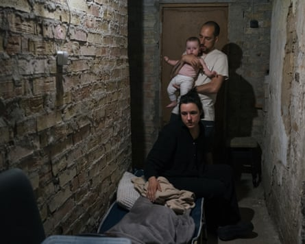
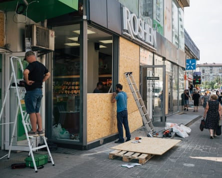
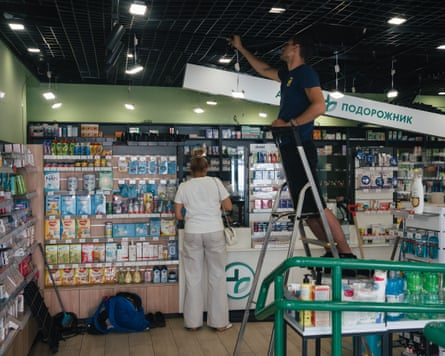
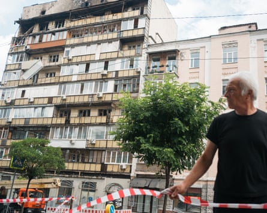
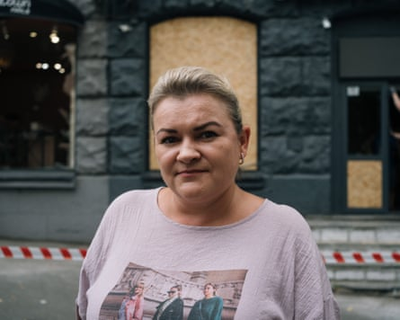
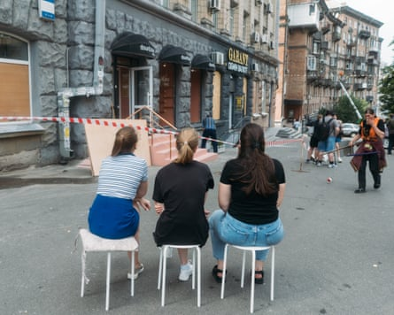

A t 1am on Thursday, Dartsia Liuba went to the basement of her Kyiv apartment building with her two children and husband, Roma. The air-raid siren had gone off. A Russian attack was coming . Liuba scooped up her seven-month-old baby daughter, Halyna, and woke her bleary-eyed nine-year-old, Orysia, and they staggered down three floors to wait in sticky darkness.
Soon explosions began. There was an ugly whine in the sky immediately above their district of Podil. It came from a Shahed kamikaze drone. The streets echoed with booms and rat-tat-tat machine-gun fire as Ukrainian air defence units tried to bring it down. The moped-like buzzing stopped – and then resumed as more drones appeared, in a swarm too big to count.
Across Ukraine’s capital, people took cover in metro stations, subways and on the lower floors of blocks of flats. They heeded official advice to stay between two walls, with bathrooms a favourite hiding spot. Last autumn, as Russia escalated its aerial raids, Liuba kitted out her shelter with camp beds, chairs and a squishy beanbag. The family bought a first aid kit and a fire extinguisher.
The Liuba family head for their basement shelter on Thursday as Russian drones attack.Photograph: Anastasia Vlasova/The Guardian
In the early hours of Thursday, Orysia finally slept. At some point Roma and Halyna dozed off. Liuba couldn’t sleep. She texted a friend: “It’s very scary. A lot of neighbours who don’t normally come to the basement are down here. It’s hard for me to deal with the explosions. I can barely hold myself together. My head hurts.” At 5am she took the kids upstairs, returning at 6am to the shelter because of incoming ballistic missiles.
Workers board up a shopfront damaged on Thursday night.Photograph: Anastasia Vlasova/The Guardian
Russia has been pounding Ukrainian towns and cities since the beginning of Vladimir Putin’s full-scale 2022 invasion. In recent months, however, these raids have become dramatically worse . One explanation is military-technical: the Kremlin has increased drone production, building new factories. Another is geo-political: since returning to the White House in January, Donald Trump has pivoted towards Moscow.
Earlier this week, Trump reversed a Pentagon decision to stop US weapons from being sent to Ukraine. Some interpreted this as a sign the US president has finally tired of Putin, who has snubbed a White House ceasefire proposal. True or not, the regular arms deliveries that characterised the Joe Biden years have fizzled out. With Russian troops moving forward in the east, Ukraine’s situation grows more precarious.
Kyiv has previously relied on Washington to provide interceptor missiles for its Patriot anti-aircraft defence systems. Ukraine’s missile stocks are running dangerously low. And so, enemy drones – sent on chaotic trajectories – get through. Trump has now promised to send 10 interceptor missiles , reports suggest. Ukrainian officials are grateful, but say these numbers are too minuscule to make much difference.
With each fresh onslaught Russia exceeds its own grim tally. In June 2024 it fired 580 rockets and drones at Ukraine; in June 2025 it was 5,209. On Wednesday it sent a record 728 drones and 13 Kinzhal and Iskander missiles. Most were directed at Lutsk , a city near the Polish border. Thursday’s 10-hour raid on Kyiv killed two people and injured 28. According to the UN, Ukrainian civilian casualties are at a three-year high.
“It’s like the London blitz but far worse. This is blitz, blitz, blitz,” Liuba said on Thursday, brewing a pot of strong coffee in her second-floor apartment, and gulping a painkiller. The raids left her and her fellow mums exhausted, numb, wrung-out and forgetful, she said. “It’s a very weird state, a delirium. You wake up in the morning trying to do normal things, like take your kids to school or do laundry. But you feel totally stressed.”
A worker fixes the ceiling of a pharmacy.Photograph: Anastasia Vlasova/The Guardian
A damaged block of flats in the aftermath of Thursday night’s attack on Kyiv.Photograph: Anastasia Vlasova/The Guardian
Liuba had fled the city of Irpin, just outside Kyiv, in March 2022, as Russian tanks closed in. She spent a year as a refugee in London, with Orysia going to Highgate primary school, before returning to Ukraine. “I missed my family,” she explained. In labour last November, while giving birth to Halyna, Liuba spent hours in a maternity hospital shelter during an attack. Her husband, Roma, is a soldier. “Since the war I take mild antidepressants, on and off,” she said.
On Thursday morning a pall of smoke hung over the capital as groggy residents inspected the damage. One drone had hit a block in Sichovykh Striltsiv Street, in the centre of Kyiv, setting fire to the roof and top floor. Firefighters doused the blackened residential building with water. The twisted remains of the drone – a Geran-2 model, serial number 29316 – lay on the pavement, swept into a neat pile.
“Last night was terrible. It gets worse and worse,” said Nataliya Serhiyivna, an accountant who works in the building opposite. “There were so many Shaheds, and impacts. A young policewoman was killed.” She had spent the night in the metro. “You can’t get reach the platform. People are lying on the floor and stairs. Everywhere is full. We need better air defence. Western countries should help more. Nobody gives us safety.”
‘We need better air defence. Western countries should help more,’ says Nataliya Serhiyivna.Photograph: Anastasia Vlasova/The Guardian
Workers were repairing broken glass at a currency exchange and a nail bar. Asked about the latest bombing, one of the bar workers, 24-year-old Alina, said: “It’s fucked up. Russia is a terrorist state. We are not the first country to suffer.” Alina said that as drones circled above, she scrolled through social media and news updates. She added: “I watch a lot of cat videos on TikTok. I have a cat and find the videos calming. It’s banal psychology, I know.”
Down the road, close to Lukyanivska metro station, another drone had punched a hole in an old brick-built factory. Across from it, broken orange-and-green letters from a cosmetics store – eva.ua – had been propped against a fence; workers fitted boards of plywood to shattered windows. The district is home to many Ukrainians displaced by fighting from other parts of the country. It has been repeatedly hit, with apartments consequently cheap to rent.
The biggest damage was to people, especially to the younger generation, a Ukrainian visitor, Karina Obermeier, suggested. She and her German husband, Walter, had travelled from their home in Munich to see relatives in Kyiv. “We know one 16-year-old who doesn’t laugh any more. She won’t leave her father. Before the war she was a normal girl. My brother developed stomach pains. A female friend drinks every night to cope with the situation.”
Liuba said the bombardment had drawn people together. During long hours in the shelter she chatted to her neighbours – the “guy with a moustache” from upstairs, and another family living on the top floor. They discussed herbal tea remedies. When Halyna was asleep, Liuba said she worked on her laptop – she is a graphic designer – and read. Of Russia, she said: “They are trying to kill us more. It’s the tactics of terror: throw, throw, throw.”
Nail salon workers wait for debris to be cleared.Photograph: Anastasia Vlasova/The Guardian
By late morning on Thursday, all was calm. Orysia showed off a farewell album her friends from primary school in London had given her. There were happy photos of trips to the National Gallery and to Buckingham Palace. “I liked my teachers very much,” she said in English. Liuba smoked a rolled-up cigarette on the balcony; a baby’s car seat was piled on top of a green flak jacket. Later this month she and the girls will travel to the Netherlands for a holiday.
“For Orysia it will be nice to spend some time in a normal situation. We will return in time for the new school year,” Liuba said. How would life be different in the Netherlands? “I imagine we are going to sleep in a bed for the whole night next to a window in a quiet village,” she replied.